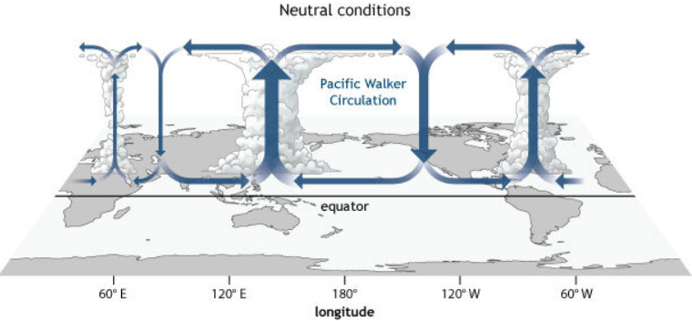

The Pacific Ring of Fire is a region around the Pacific Ocean that is greatly effected by the movement of tectonic plates. Countries that border the The Pacific Ring of Fire not only expericence larger amounts of volcanic action and earthquakes, but are also greatly effected by the global weather pattern known as
El Nino-Sourthern Oscillation (ENSO).
El Nino-Sourthern Oscillation is a weather event that mainly effects the Pacific Ocean region, in particular the Eastern Pacific Ocean close to the equator. This event cycles between an El Nino and a La Nina event every 3-7 years, with the severity of the events constantly changing. The main difference between cycles is the ocean water temperature and direction of current flow within the Pacific Ocean. These environmental factors greatly affect the fish populations off the coast of certain countries at certain points of an ENSO cycle. The graph below represents the severity rating of the El Nino and La Nina cycles, overlayed with a selected countries fishing data over time.